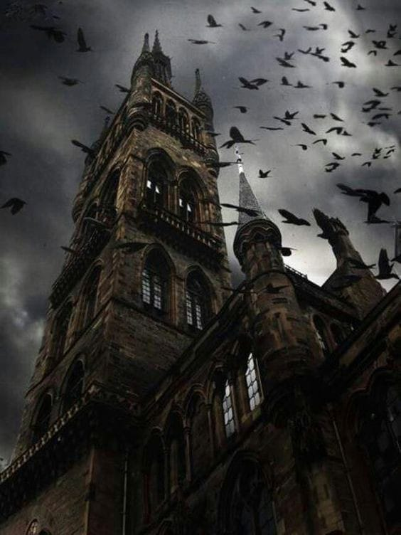
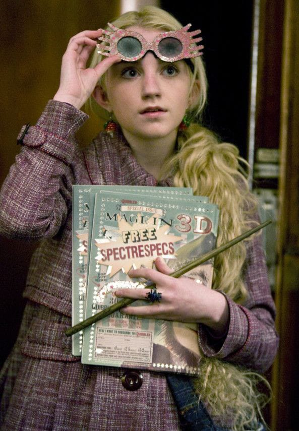
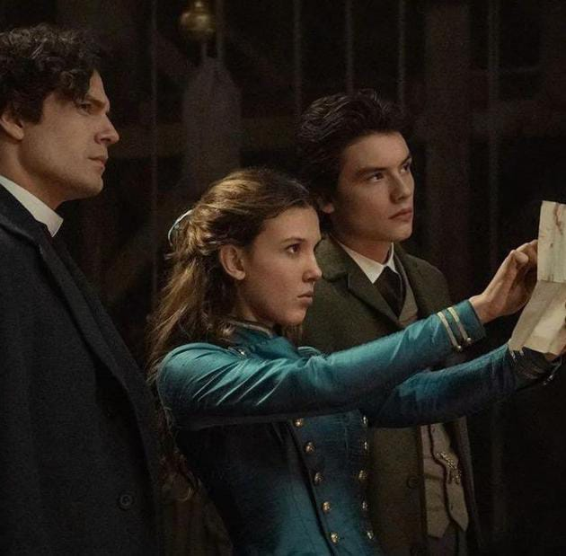

<!DOCTYPE html>
<html>
<head>
     <meta charset="utf-8">
     <meta name="viewport" content="width=device-width, intial-scale=1">
     <title>Background Image</title>
</head>
<body background="w1.jpg">
</body>
</html>

<div style="margin-top:5px;">
<h1 style="color:white; font-size:40px; text-align:center;">Welford School</h1>


<div style="text-align:center; margin-top:40px;">
<a style=" padding-right:20px;" href="home.html">Home</a>
<a style=" padding-right:20px;"href="about.html">About</a>
<a style=" padding-right:20px;"href="services.html">Services</a>
<a style=" padding-right:20px;"href="team.html">Team</a>
<a style=" padding-right:20px;"href="contact.html">Contact</a>
</div>

<p style="font-size:20px; text-align:center; line-height: 30px; margin-bottom:40px;color:white">In the tapestry of uniqueness, Welford threads the magic of acceptance.</p>

<div style="text-align:center"><a style="font-size:10px; background-color:red;padding:15px 35px 15px 35px;color:white;"href="https://en.wikipedia.org/wiki/Magician_(fantasy)">Read more</a></div>

<h1 style="width:60%">

<h1 style="font-size:40px; text-align:center;color:white">Magical misfits, welcome home. Welford School is where your differences become your strengths</h1>


<!DOCTYPE html>
<html lang="en">
<head>
    <meta charset="UTF-8">
    <meta name="viewport" content="width=device-width, initial-scale=1.0">
    <title>About Us - Welford School for Outcasts</title>
    <style>
        body {
            font-family: 'Arial', sans-serif;
            background-color: #f0f0f0;
            margin: 0;
            padding: 0;
            text-align: center;
        }

        header {
         
            color: white;
            padding: 20px;
        }

        h1 {
            margin-bottom: 20px;
color:"white"
        }

        section {
            padding: 20px;
        }

        .student-image {
            max-width: 100%;
            height: auto;
            border-radius: 10px;
            margin-bottom: 10px;
        }

        footer {
            background-color: #333;
            color:white;
            padding: 10px;
            position: fixed;
            bottom: 0;
            width: 100%;
        }
    </style>
</head>
<body>

    <header>
        <h1>About Us - Welford School for Outcasts</h1>
    </header>

    <section>
        
        <h2 style="font-size:20px; text-align:center; line-height: 30px; margin-bottom:40px;color:white">Embrace Your Magical Journey</h2>
        <p style="font-size:20px; text-align:center; line-height: 30px; margin-bottom:40px;color:white">Welford School is more than just a place of learning; it's a sanctuary for those who possess extraordinary gifts. Our students embark on a magical journey where they discover the depths of their abilities.</p>
    </section>

    <section>
        <h2 style="font-size:20px; text-align:center; line-height: 30px; margin-bottom:40px;color:white">Magical Moments at Welford</h2>
        <p style="font-size:20px; text-align:center; line-height: 30px; margin-bottom:40px;color:white">From mastering complex spells to forging bonds with magical creatures, our students experience moments that defy the ordinary. Welford is where magical experiences become a part of your everyday life.</p>
    </section>

    <section>
        <h2 style="font-size:20px; text-align:center; line-height: 30px; margin-bottom:40px;color:white">Testimonials</h2>
        <blockquote>
            <p style="font-size:20px; text-align:center; line-height: 30px; margin-bottom:40px;color:white">"Welford School is where I found my true self. The magical experiences here are beyond anything I could have imagined." - Sarah, Enchantment Major</p>
        </blockquote>
        <blockquote>
            <p style="font-size:20px; text-align:center; line-height: 30px; margin-bottom:40px;color:white">"The journey at Welford is not just about magic; it's about discovering the magic within yourself and embracing it fully." - Alex, Divination Minor</p>
        </blockquote>
    </section>
  
 
    <footer>
        <p>&copy; 2023 Welford School for Outcasts</p>
    </footer>

</body>
</html>
